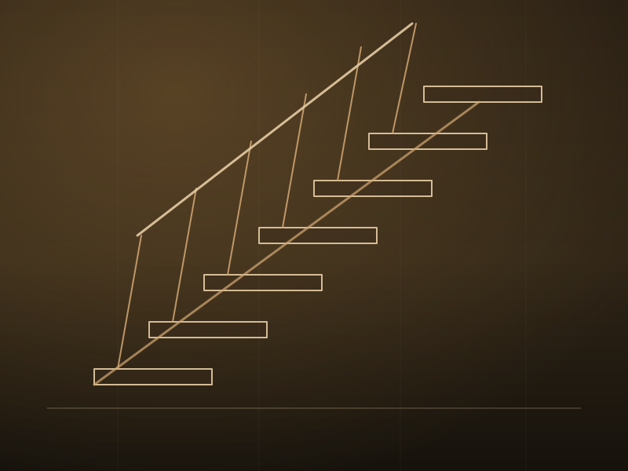
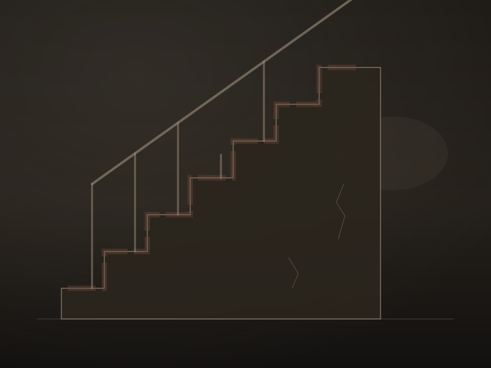

Galerie
Nos réalisations
Une sélection de nos ouvrages récents. Chaque projet est unique, dessiné et fabriqué sur mesure dans notre atelier.


Avant / après
La transformation d'un chantier


Votre projet mérite le même soin
Parlez-nous de votre intérieur — nous imaginons ensemble l'ouvrage qui lui donnera du caractère.